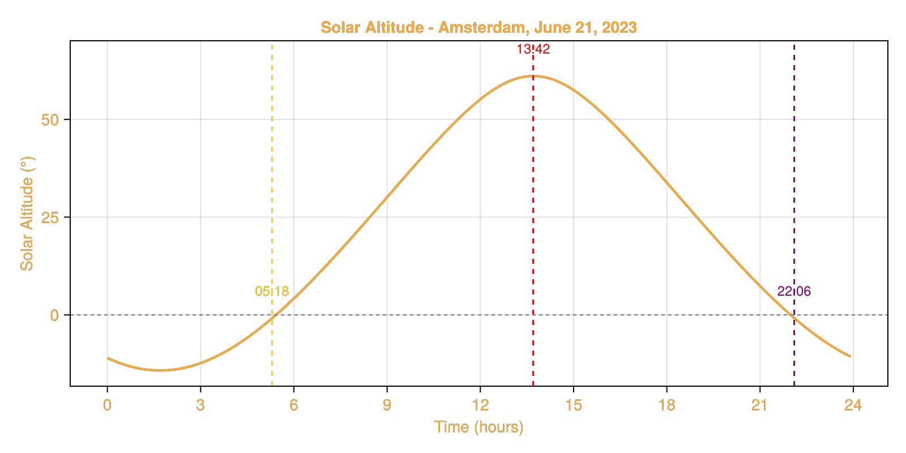
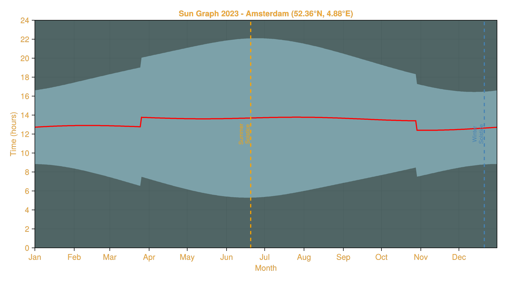

Utilities
SolarPosition.jl provides several utility functions for common solar position-related calculations, such as determining solar transit, sunrise, and sunset times for a given location and date.
For now, only the analytical SPA algorithm is supported for these utility functions. This algorithm was developed by Jean Meeus in his book Astronomical Algorithms [Mee91] and is widely used in the astronomical community for solar position calculations, particularly because it is relatively accurate but computationally efficient and simple to implement.
Sunrise, Sunset, and Solar Noon
The module exports the following convenience functions:
transit_sunrise_sunset— solar noon, sunrise, and sunset for a given daynext_sunrise,previous_sunrise— sunrise timesnext_sunset,previous_sunset— sunset timesnext_solar_noon,previous_solar_noon— solar noon times
Solar noon is defined as the time when the sun reaches its highest elevation for the day. It is also referred to as the solar transit, the point the sun crosses the local meridian. The next/previous sunrise and sunset functions allow you to find the next or previous occurrence of these events relative to a given input time.
Example: Sunrise and Sunset
As an example, let's calculate the solar noon, sunrise, and sunset times for the Van Gogh museum in Amsterdam on June 21, 2023:
using SolarPosition, Dates, TimeZones
tz_amsterdam = TimeZone("Europe/Brussels")
obs = Observer(52.35888, 4.88185, 100.0)
# Summer solstice
zdt = ZonedDateTime(2023, 6, 21, 12, 0, tz_amsterdam)
events = transit_sunrise_sunset(obs, zdt)
println("Solar noon: ", events.transit)
println("Sunrise: ", events.sunrise)
println("Sunset: ", events.sunset)Solar noon: 2023-06-21T13:42:15+02:00
Sunrise: 2023-06-21T05:18:05+02:00
Sunset: 2023-06-21T22:06:24+02:00We can confirm these results by consulting timeanddate.com for our location and date.
Another option is to use the next_sunrise and next_sunset functions to return the sunrise and sunset times directly:
using SolarPosition, Dates, TimeZones
next_sunrise_time = next_sunrise(obs, zdt)
next_sunset_time = next_sunset(obs, zdt)
println("Next Sunrise: ", next_sunrise_time)
println("Next Sunset: ", next_sunset_time)Next Sunrise: 2023-06-22T05:18:19+02:00
Next Sunset: 2023-06-21T22:06:24+02:00Plotting the Solar Altitude
To visualize the solar altitude throughout the day, we can use the solar_position function to compute the solar positions at regular intervals and plot the results. We will make use of next_sunrise and next_sunset to mark the sunrise and sunset times on the plot.
Visualization
using CairoMakie
# Define time range for the entire day (every 5 minutes)
start_time = ZonedDateTime(2023, 6, 21, 0, 0, tz_amsterdam)
end_time = ZonedDateTime(2023, 6, 21, 23, 59, tz_amsterdam)
times = collect(start_time:Minute(5):end_time)
# Compute solar positions for all times
positions = solar_position(obs, times)
# Get key events
events = transit_sunrise_sunset(obs, zdt)
sunrise_elev = solar_position(obs, events.sunrise).elevation
sunset_elev = solar_position(obs, events.sunset).elevation
transit_elev = solar_position(obs, events.transit).elevation
# Convert times to hours for plotting
times_hours = hour.(times) .+ minute.(times) ./ 60
# Create the plot with styling
fig = Figure(backgroundcolor=:transparent, textcolor="#f5ab35", size=(800, 400))
ax = Axis(fig[1, 1],
xlabel="Time (hours)",
ylabel="Solar Altitude (°)",
title="Solar Altitude - Amsterdam, June 21, 2023",
backgroundcolor=:transparent,
xticks=0:3:24)
# Plot the solar altitude curve
lines!(ax, times_hours, positions.elevation,
linewidth=2, color="#f5ab35")
# Add vertical markers and labels for events
sunrise_hour = hour(events.sunrise) + minute(events.sunrise) / 60
transit_hour = hour(events.transit) + minute(events.transit) / 60
sunset_hour = hour(events.sunset) + minute(events.sunset) / 60
vlines!(ax, sunrise_hour, linestyle=:dash, color=:gold, linewidth=1.5)
text!(ax, sunrise_hour, sunrise_elev + 5,
text=Dates.format(events.sunrise, "HH:MM"),
align=(:center, :bottom), color=:gold, fontsize=12)
vlines!(ax, transit_hour, linestyle=:dash, color=:red, linewidth=1.5)
text!(ax, transit_hour, transit_elev + 5,
text=Dates.format(events.transit, "HH:MM"),
align=(:center, :bottom), color=:red, fontsize=12)
vlines!(ax, sunset_hour, linestyle=:dash, color=:purple, linewidth=1.5)
text!(ax, sunset_hour, sunset_elev + 5,
text=Dates.format(events.sunset, "HH:MM"),
align=(:center, :bottom), color=:purple, fontsize=12)
# Add horizontal line at horizon
hlines!(ax, 0, linestyle=:dash, color=:gray, linewidth=1)Makie.HLines{Tuple{Int64}}
As you can see, the sunrise and sunset events occur slightly below the horizon line (0° elevation). This is due to atmospheric refraction effects, which cause the sun to appear slightly higher in the sky when it is near the horizon.
Sun Graph
We can plot the sunrise, sunset, and solar noon times on a sun graph to visualize the number of daylight hours throughout the day for our location in an entire year.
Visualization
# Generate dates for the entire year 2023 (every day)
year_start = ZonedDateTime(2023, 1, 1, 12, 0, tz_amsterdam)
year_dates = [year_start + Day(i) for i in 0:364]
# Calculate sunrise, sunset, and solar noon for each day
sunrise_times = Float64[]
sunset_times = Float64[]
solar_noon_times = Float64[]
for date in year_dates
events = transit_sunrise_sunset(obs, date)
# Convert to hours since midnight
push!(sunrise_times, hour(events.sunrise) + minute(events.sunrise) / 60)
push!(sunset_times, hour(events.sunset) + minute(events.sunset) / 60)
push!(solar_noon_times, hour(events.transit) + minute(events.transit) / 60)
end
# Calculate daylight hours for each day
daylight_hours = sunset_times .- sunrise_times
# Find solstices (longest and shortest days)
summer_solstice_idx = argmax(daylight_hours)
winter_solstice_idx = argmin(daylight_hours)
# Create day of year array for x-axis
day_of_year = 1:365
# Create the sun graph
fig = Figure(backgroundcolor=:transparent, textcolor="#f5ab35", size=(900, 500))
ax = Axis(fig[1, 1],
xlabel="Month",
ylabel="Time (hours)",
title="Sun Graph 2023 - Amsterdam (52.36°N, 4.88°E)",
backgroundcolor=:transparent,
yticks=0:2:24,
xticks=(
[1, 32, 60, 91, 121, 152, 182, 213, 244, 274, 305, 335],
["Jan", "Feb", "Mar", "Apr", "May", "Jun", "Jul", "Aug", "Sep", "Oct", "Nov", "Dec"]
))
xlims!(ax, 1, 365)
# Fill night time (top part: midnight to sunrise)
band!(ax, day_of_year, sunrise_times, fill(24.0, length(day_of_year)),
color=(:darkslategray, 0.8))
# Fill night time (bottom part: sunset to midnight)
band!(ax, day_of_year, fill(0.0, length(day_of_year)), sunset_times,
color=(:darkslategray, 0.8))
# Fill daylight time
band!(ax, day_of_year, sunrise_times, sunset_times,
color=(:lightblue, 0.6))
# Plot solar noon line
lines!(ax, day_of_year, solar_noon_times,
color=:red, linewidth=2, label="Solar Noon")
# Mark solstices
vlines!(ax, summer_solstice_idx, linestyle=:dash, color=:orange, linewidth=2)
text!(ax, summer_solstice_idx, 12,
text="Summer\nSolstice",
align=(:center, :bottom), color=:orange, fontsize=10, rotation=π/2)
vlines!(ax, winter_solstice_idx, linestyle=:dash, color=:steelblue, linewidth=2)
text!(ax, winter_solstice_idx, 12,
text="Winter\nSolstice",
align=(:center, :bottom), color=:steelblue, fontsize=10, rotation=π/2)
ylims!(ax, 0, 24)┌ Warning: Assignment to `events` in soft scope is ambiguous because a global variable by the same name exists: `events` will be treated as a new local. Disambiguate by using `local events` to suppress this warning or `global events` to assign to the existing global variable.
└ @ utilities.md:154
We also marked the summer and winter solstices, which correspond to the longest and shortest days of the year, respectively.
Note the two discontinuities in March and October. These are due to the start and end of Daylight Saving Time (DST). The DST period starts on the last Sunday of March and ends on the last Sunday of October. Clocks are set one hour ahead in March, meaning sunrise and sunset times are later by one hour. This effect is reversed in October when clocks are set back one hour. This effectively turns the UTC offset from +1 hour to +2 hours during the DST period.
Date, DateTime and ZonedDateTime
The utility functions accept three different time input types:
ZonedDateTime— Recommended for timezone-aware calculations. The functions will return results in the same timezone as the input.DateTime— Assumed to be in UTC. Results will be returned asDateTimein UTC.Date— Assumed to be in UTC. Results will be returned asDateTimein UTC.
When working with specific geographic locations, it's best to use ZonedDateTime to ensure results are in the local timezone and to correctly handle Daylight Saving Time transitions.
Here's an example showing the different input types:
# Using ZonedDateTime (recommended - timezone aware)
zdt = ZonedDateTime(2023, 6, 21, 12, 0, tz_amsterdam)
events_zdt = transit_sunrise_sunset(obs, zdt)
println("ZonedDateTime input:")
println(" Sunrise: ", events_zdt.sunrise)
# Using DateTime (assumed UTC at 00:00)
dt = DateTime(2023, 6, 21, 12, 0)
events_dt = transit_sunrise_sunset(obs, dt)
println("\nDateTime input (UTC):")
println(" Sunrise: ", events_dt.sunrise)
# Using Date (assumed UTC at 00:00)
d = Date(2023, 6, 21)
events_d = transit_sunrise_sunset(obs, d)
println("\nDate input (UTC 00:00):")
println(" Sunrise: ", events_d.sunrise)ZonedDateTime input:
Sunrise: 2023-06-21T05:18:05+02:00
DateTime input (UTC):
Sunrise: 2023-06-21T03:18:05
Date input (UTC 00:00):
Sunrise: 2023-06-21T03:18:05Note that DateTime and Date inputs produce results in UTC, while ZonedDateTime preserves the input timezone. For Amsterdam in summer, the local time is UTC+2 (CEST), which explains the 2-hour difference in the sunrise times shown above.
Forward looking functions
SolarPosition.Utilities.next_sunrise — Function
next_sunrise(
obs::Observer,
dt::Dates.DateTime
) -> Dates.DateTime
next_sunrise(
obs::Observer,
dt::Dates.DateTime,
alg::SolarAlgorithm
) -> Dates.DateTime
Calculate the next sunrise after a given DateTime at an Observer location.
Arguments
obs: Observer locationdt: DateTime to start searching fromalg: Solar algorithm to use (default: SPA())
Returns
- DateTime of the next sunrise after
dt
SolarPosition.Utilities.next_sunset — Function
next_sunset(
obs::Observer,
dt::Dates.DateTime
) -> Dates.DateTime
next_sunset(
obs::Observer,
dt::Dates.DateTime,
alg::SolarAlgorithm
) -> Dates.DateTime
Calculate the next sunset after a given DateTime at an Observer location.
Arguments
obs: Observer locationdt: DateTime to start searching fromalg: Solar algorithm to use (default: SPA())
Returns
- DateTime of the next sunset after
dt
SolarPosition.Utilities.next_solar_noon — Function
next_solar_noon(
obs::Observer,
dt::Dates.DateTime
) -> Dates.DateTime
next_solar_noon(
obs::Observer,
dt::Dates.DateTime,
alg::SolarAlgorithm
) -> Dates.DateTime
Calculate the solar noon (transit) time for a given DateTime at an Observer location. If the solar noon for the current day has already passed, returns the solar noon for the next day.
Arguments
obs: Observer locationdt: DateTime to start searching fromalg: Solar algorithm to use (default: SPA())
Returns
- DateTime of the next solar noon (transit) after
dt
Backward looking functions
SolarPosition.Utilities.previous_sunrise — Function
previous_sunrise(
obs::Observer,
dt::Dates.DateTime
) -> Dates.DateTime
previous_sunrise(
obs::Observer,
dt::Dates.DateTime,
alg::SolarAlgorithm
) -> Dates.DateTime
Calculate the previous sunrise before a given DateTime at an Observer location.
Arguments
obs: Observer locationdt: DateTime to start searching fromalg: Solar algorithm to use (default: SPA())
Returns
- DateTime of the previous sunrise before
dt
SolarPosition.Utilities.previous_sunset — Function
previous_sunset(
obs::Observer,
dt::Dates.DateTime
) -> Dates.DateTime
previous_sunset(
obs::Observer,
dt::Dates.DateTime,
alg::SolarAlgorithm
) -> Dates.DateTime
Calculate the previous sunset before a given DateTime at an Observer location.
Arguments
obs: Observer locationdt: DateTime to start searching fromalg: Solar algorithm to use (default: SPA())
Returns
- DateTime of the previous sunset before
dt
SolarPosition.Utilities.previous_solar_noon — Function
previous_solar_noon(
obs::Observer,
dt::Dates.DateTime
) -> Dates.DateTime
previous_solar_noon(
obs::Observer,
dt::Dates.DateTime,
alg::SolarAlgorithm
) -> Dates.DateTime
Calculate the previous solar noon (transit) before a given DateTime at an Observer location.
Arguments
obs: Observer locationdt: DateTime to start searching fromalg: Solar algorithm to use (default: SPA())
Returns
- DateTime of the previous solar noon (transit) before
dt
Docs
SolarPosition.Utilities.transit_sunrise_sunset — Function
Calculate the sun transit, sunrise, and sunset for a given date at an Observer location.
SolarPosition.Utilities.TransitSunriseSunset — Type
struct TransitSunriseSunset{T<:Union{Dates.DateTime, TimeZones.ZonedDateTime}}Struct to hold the results of sun transit, sunrise, and sunset calculations.
The datetime fields are in UTC unless a TimeZone is provided, in which case they are converted to that timezone assuming the input DateTime was in UTC.
Constructors
TransitSunriseSunset{DateTime}(
transit::DateTime,
sunrise::DateTime,
sunset::DateTime,
::Nothing,
)
TransitSunriseSunset{ZonedDateTime}(
transit::DateTime,
sunrise::DateTime,
sunset::DateTime,
tz::TimeZone,
)Fields
transit::Union{Dates.DateTime, TimeZones.ZonedDateTime}sunrise::Union{Dates.DateTime, TimeZones.ZonedDateTime}sunset::Union{Dates.DateTime, TimeZones.ZonedDateTime}